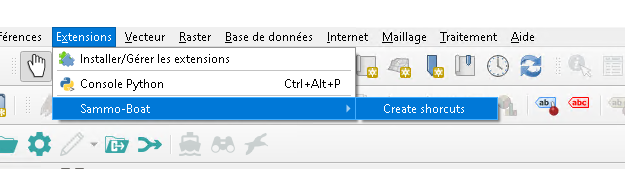

Install
Sammo-boat is built on QGIS 3.22 for best usage. QGIS can be installed throught the standalone installer or with the OSGeo4W network installer.
Dependencies
Some dependencies are necessary for the plugin to properly work and may be installed through the Python Console of QGIS Desktop with pip. If pip is not installed :
import subprocess
cmd="python -m ensurepip --upgrade".split(" ")
subprocess.run(cmd)
And to install the plugin dependencies :
import pip
pip.main(['install', 'sounddevice'])
pip.main(['install', 'soundfile'])
pip.main(['install', 'pyserial'])
pip.main(['install', 'pywin32']) # Windows exclusively
QGIS Desktop needs to be restarted after installing these dependencies.
Profile management
SAMMO-Boat is designed to work with a clean interface. We provide some QGIS customization files in the profile folder.
The admin profile provides a full QGIS interface while the operator profile removes almost all QGIS toolbar and menu.
On Linux, you can use the following commandline :
qgis --customizationfile path/to/QGISCUSTOMIZATION3_operator.ini --globalsettingsfile path/to/QGIS3_operator.ini
or add the following arguments in a shortcut configuration :
qgis --customizationfile path/to/QGISCUSTOMIZATION3_operator.ini --globalsettingsfile path/to/QGIS3_operator.ini
On Windows, a menu has been added to configure shorcut on the user desktop:
